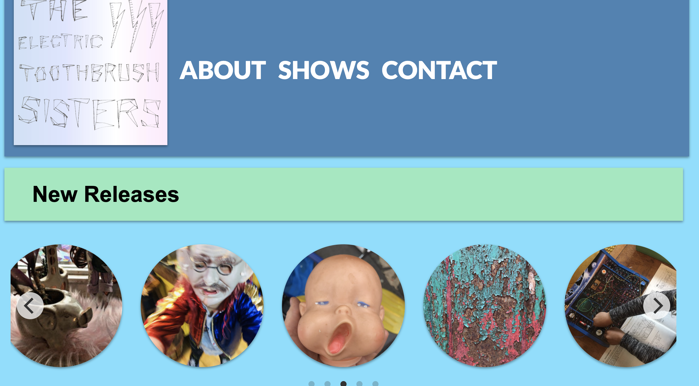

These are some projects I have worked on to hone my skills!
Though I have only recently graduated from a coding bootcamp, I have wasted no time getting my feet wet. Below are some projects I have cut my teeth on, and I am always hungry for more!
-

Reuter Photo Archive
This is a MERN stack app that provides an interactive glimpse of renowned St. Louis photographer Bob Reuter's photo archive. All photos were digitally scanned by the St. Louis History Museum.
Git Hub Link -

Dream-Z
Dream-Z is a SQL database that can be used as a dream journal. Once you have created entries, it uses a worldcloud API and Stanford's CoreNLP to analyze the dreams!
Git Hub Link -

Band Website Template
This is a basic template for a Java Spring Boot web-app. It uses Java, Javascript, HTML and CSS, and is set-up for SQL integration. It includes carousels and modals for sharing media.
Git Hub Link -

Product Pal
This was a group project in which we built the framework for an inventory app using SQL and Java Spring Boot. I utilized the JavaMail API to allow log-in functionality.
Git Hub Link -

Big Muddy Records
This is a website built with Java and Javascript and integrated into wordpress. It was for my previous entrepreneurial endeavour, a record label and production company in St. Louis, MO.